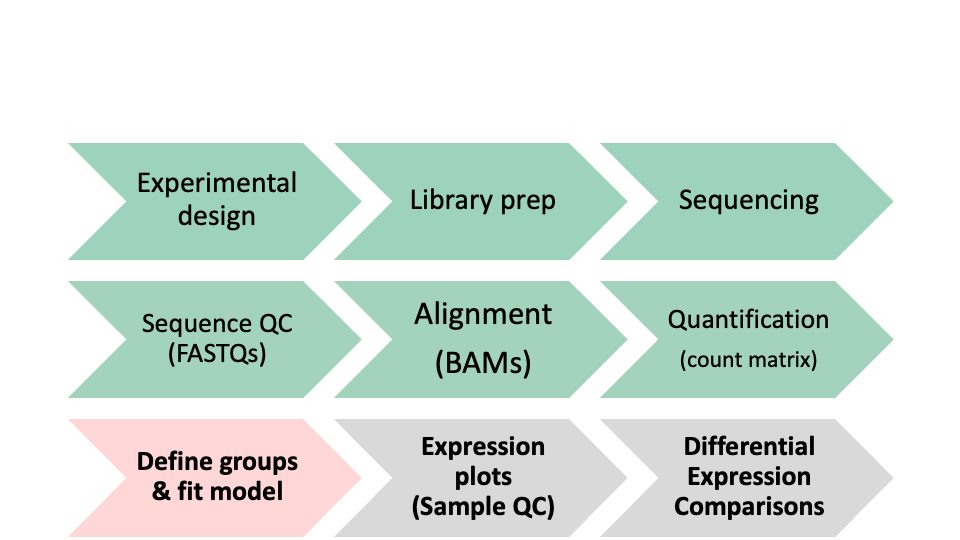

Day 2 - Module 08: Count normalizations and DESeq2 model fitting
UM Bioinformatics Core
2021-09-16
Objectives:
- Discuss count normalizations
- Execute model fitting for differential expression comparisons
1 Differential Expression Workflow
Here we will proceed with count normalizations and fit our DESeq2 model.

2 Count normalizations
Since counts of mapped reads for each gene is proportional to the expression of RNA in addition to many “uninteresting” other factors, normalization is the process of scaling raw count values to account for the “uninteresting” factors and ensure expression levels are more comparable.
2.1 Normalization goals
Two common factors that need to be accounted for during normalization are sequencing depth and gene length. Common normalization approaches (such as FPKM, RPKM, CPM, TPM, etc.) account for one or both of these factors.
- Sequencing depth normalization is neccessary to account for the proportion of reads per gene expected for more deeply sequenced samples (like in pink below) versus a less deeply sequenced sample (like in green below).

Note that each pink or green rectangle represents an aligned read, with reads spanning an intron connected by a dashed line. Figure from HBC training materials
- Gene length normalization is necessary since genes of different lengths have different probablities of generating fragments that end up in the library. In the example below, both genes have similar levels of expression. However, the number of reads that map to the longer gene (Gene X) will be much great than the number of reads that map to the short gene (Gene Y).

Each pink rectangle represents an aligned read, with reads spanning an intron connected by a dashed line. Figure from HBC training materials
Note: The above figures are originally from a HBC tutorial that also includes a detailed comparison of different normalization (CPM, TPM, FPKM) approaches and their best uses.
Check-in: Questions about normalizations?
2.2 DESeq2 normalizations
An additional consideration for normalization is RNA composition. A few highly differentially expressed genes, differences in the number of genes expressed between samples, or contamination are not accounted for by depth or gene length normalization methods. Accounting for RNA composition is particularly important for differential expression analyses, regardless of the tool used.
DESeq2 has an internal normalization process. However for data exploration and visualizations, it is helpful to generate an object of independently normalized counts.
For downstream sample level quality control visualizations, we will use the rlog transformation that accounts for sequencing depth for each sample and RNA composition differences in the overall experiment.
The rlog transformation produces log2 scale data that has also been normalized to overall library size as well as variance across genes at different mean expression levels. For larger numbers of samples, there is an alternative transformation method, vst that can be used instead for count normalizations.
The command to generate the normalized count object has a few parts, including dds as an input and providing a value to the option blind.
rld <- rlog(dds, blind = TRUE)## -- note: fitType='parametric', but the dispersion trend was not well captured by the
## function: y = a/x + b, and a local regression fit was automatically substituted.
## specify fitType='local' or 'mean' to avoid this message next time.*Note: We see a message here that our data did not fit the default ‘parametric’ dispersion model so a local regression was substituted. If we had more time, we might look at a dispersion plot with the plotDispEsts(dds) function, but as this bioconductor thread discusses, other visualizations of our data might be more helpful and/or easier to interpret.
Next, we’ll look at the results of the tranformation.
head(assay(rld), 2)## Sample_116498 Sample_116499 Sample_116500 Sample_116501 Sample_116502
## ENSMUSG00000000001 12.639049 12.609976 12.791192 12.619063 12.721280
## ENSMUSG00000000028 7.847671 8.152787 7.949574 8.203993 8.464987
## Sample_116503 Sample_116504 Sample_116505 Sample_116506 Sample_116507
## ENSMUSG00000000001 12.668801 12.53167 12.50798 12.47565 12.72717
## ENSMUSG00000000028 8.506084 10.82552 10.89710 11.00659 11.15996
## Sample_116508 Sample_116509
## ENSMUSG00000000001 12.51363 12.46995
## ENSMUSG00000000028 11.06722 11.09489Looking at the rld values, we can see that they are now in log scale. Since we set blind=TRUE, the transformation is blind to the sample information we specified in the design formula. The normalized counts are helpful for visualization methods during expresion-level quality assessment but aren’t used in the model fitting.
3 DESeq2 Model Fitting
Next, we’ll fit our standard model using the DESeq function and take a look at the objects we generate.
dds <- DESeq(dds)This command applies the model to our data, using the sample information supplied when generating the dds object so it takes some time to run.
resultsNames(dds)## [1] "Intercept" "Gtype.Tx_ko.Tx_vs_wt.Tx"
## [3] "Gtype.Tx_ko.control_vs_wt.Tx" "Gtype.Tx_wt.control_vs_wt.Tx"The results include three pairwise comparisons to the specified control as default but other information is now stored in the dds object so we can generate additional pairwise comparisons.
head(dds)Checkpoint: If you see the same results when you execute resultsNames(dds), please indicate with the green ‘yes’ button. Otherwise, please use the red ‘x’ button to get help before the break
3.0.0.1 [Optional Exercise]
If you executed the commands in the option exercise from Module 07, you can fit a seperate DESeq2 model for the patient sample example, which included a covariate in our model.
Click for fitting a model that includes a covariate
r dds_patient <- DESeq(dds_patient)
r resultsNames(dds_patient) If you run through the optional exercises, you can explore the impact of adding a covariate by substituting dds_patient for dds and re-running those commands since both DESeq2 objects have their data organized in the same way.
4 Summary
In this section, we:
- Learned about count normalizations and uses
- Generated a normalized count table
- Fit two DESeq2 models for our data
- Saw the impact of including a covariate in our model
Before moving on with our group comparisons, we’ll take a short (10 minute) break.
5 Sources
5.1 Training resources used to develop materials
- HBC DGE setup: https://hbctraining.github.io/DGE_workshop/lessons/01_DGE_setup_and_overview.html
- HBC Count Normalization: https://hbctraining.github.io/DGE_workshop/lessons/02_DGE_count_normalization.html
- DESeq2 standard vignette: http://bioconductor.org/packages/devel/bioc/vignettes/DESeq2/inst/doc/DESeq2.html
- DESeq2 beginners vignette: https://bioc.ism.ac.jp/packages/2.14/bioc/vignettes/DESeq2/inst/doc/beginner.pdf
- Bioconductor RNA-seq Workflows: https://www.bioconductor.org/help/course-materials/2015/LearnBioconductorFeb2015/B02.1_RNASeq.html
These materials have been adapted and extended from materials listed above. These are open access materials distributed under the terms of the Creative Commons Attribution license (CC BY 4.0), which permits unrestricted use, distribution, and reproduction in any medium, provided the original author and source are credited.